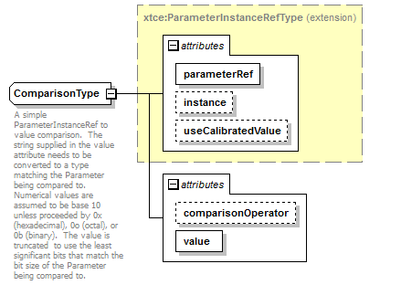

| diagram |  | ||||||||||||||||||||||||||||||||||||
| namespace | http://www.omg.org/space/xtce | ||||||||||||||||||||||||||||||||||||
| type | extension of xtce:ParameterInstanceRefType | ||||||||||||||||||||||||||||||||||||
| properties |
|
||||||||||||||||||||||||||||||||||||
| used by |
|
||||||||||||||||||||||||||||||||||||
| attributes |
|
||||||||||||||||||||||||||||||||||||
| annotation |
|
||||||||||||||||||||||||||||||||||||
| source | <complexType name="ComparisonType"> <annotation> <documentation xml:lang="en">A simple ParameterInstanceRef to value comparison. The string supplied in the value attribute needs to be converted to a type matching the Parameter being compared to. Numerical values are assumed to be base 10 unless proceeded by 0x (hexadecimal), 0o (octal), or 0b (binary). The value is truncated to use the least significant bits that match the bit size of the Parameter being compared to.</documentation> </annotation> <complexContent> <extension base="xtce:ParameterInstanceRefType"> <attribute name="comparisonOperator" type="xtce:ComparisonOperatorsType" default="=="/> <attribute name="value" type="string" use="required"/> </extension> </complexContent> </complexType> |
| type | xtce:ComparisonOperatorsType | |||||||||||||||||||||
| properties |
|
|||||||||||||||||||||
| facets |
|
|||||||||||||||||||||
| source | <attribute name="comparisonOperator" type="xtce:ComparisonOperatorsType" default="=="/> |
| type | string | ||
| properties |
|
||
| source | <attribute name="value" type="string" use="required"/> |